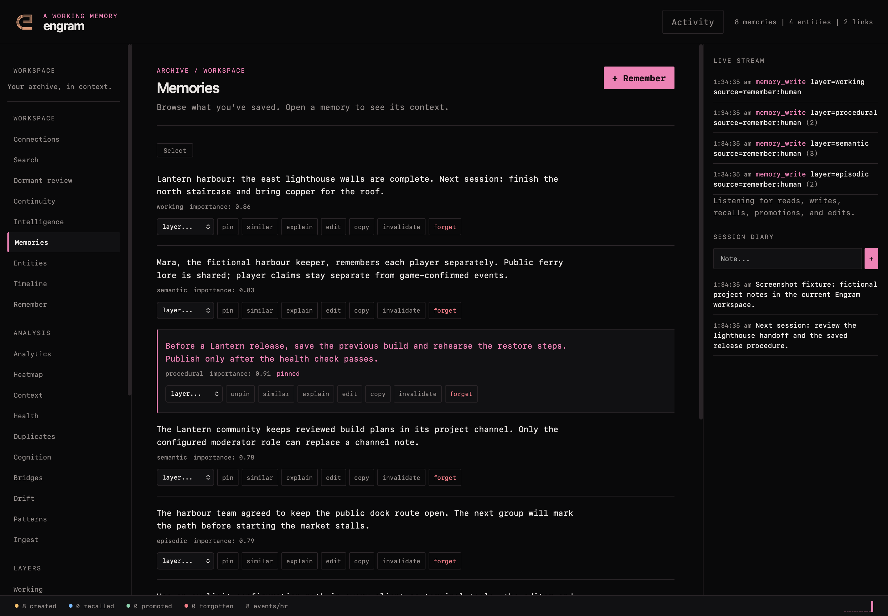
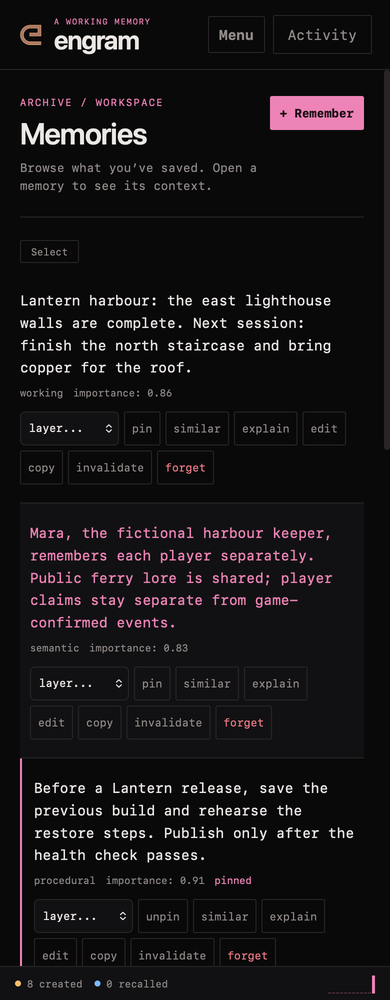

web workspace¶
The web workspace presents the same Engram store through a memory list, search, connected context and maintenance tools. Start it with an explicit configuration:
The default address is http://127.0.0.1:8420. Existing web.auth_token protection
continues to apply to the workspace and API; keep it configured when required.
The redesign does not add demo memories or replace authentication rules. Existing
database initialization and migrations still apply when starting the server.
navigate and inspect¶
The initial view is Memories. The sidebar keeps all existing tools available: Search, Continuity, Intelligence, Memories, Entities, Timeline, Remember, Neural Map, Analytics, Heatmap, Context, Health, Dedup, Cognition, Bridges, Drift, Patterns and Ingest. Dormant review is a separate nineteenth view.
At narrow widths, Menu opens navigation and Activity opens the context drawer.
The inspector and diary remain reachable. Press / to focus search and Escape to
close an open drawer. View URLs use hashes so a specific workspace view can be
bookmarked without changing API routes.
Memory rows open the inspector. Existing editing, annotations, pinning, lifecycle actions, similarity and importance details remain available. The editor loads the full memory rather than saving the abbreviated list excerpt. Selection and bulk actions, layer browsing and export remain part of the workspace.
search and continuity¶
Search retains layer/importance filters, hints and retrieval explanations. Ordinary search keeps its existing access accounting. A search result is not a claim that an old note is still current; inspect its source and timestamp.
Continuity displays stored handoffs. Intelligence can build a focused brief, compare queries and show recent activity. The native API provides stricter project-bound context for application workflows; the generic workspace keeps its existing store-wide scope.
review a dormant connection¶
Dormant review lists metadata without fetching candidate contents automatically. Open a connection explicitly to inspect the eligible memory. Then choose Useful, Irrelevant or Dismissed only when that describes what happened. Useful means the connection was actually used, not merely that a model judged it plausible.
Opening or giving feedback does not change ordinary access count, last-accessed time or importance. An inactive or forgotten candidate cannot be opened through this review flow. See the experiment guide for its mode, retention and cooldown behavior.
maintenance remains explicit¶
The graph, entity tools, timeline, charts and retention controls retain their existing functions. Operations such as consolidation, deduplication, ingestion, training and drift fixes can change the store. Read their results and existing confirmation prompts; a visual redesign does not make those operations read-only.
The design uses local system typography and no external font or unused UI-script CDN. Responsive navigation, restrained view transitions and visible keyboard focus are shared across the workspace. Validation uses an isolated representative store; no synthetic records are added to a live installation.
the workspace¶

the current dark workspace on desktop, using fictional verification data.

the current dark workspace on mobile, using fictional verification data.